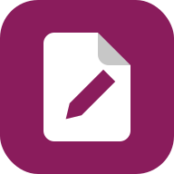
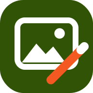
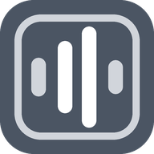
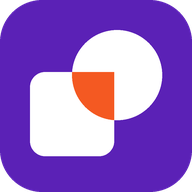
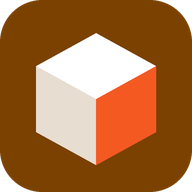
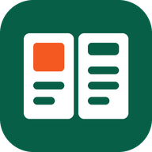

How it started
-
July 2026
One editor for one class
It began with TXTEDTR. Dave Ghidiu, who teaches computing at Finger Lakes Community College, needed a text editor for his vibe coding course: one with a live preview right beside the code, no frills to get lost in, and a careful eye for the things that quietly break a beginner's code, like curly quotes and invisible spaces pasted in from a word processor.
-
Summer into fall



Then the tutorials needed tools
Making lessons and how-to guides meant marking up screenshots, recording the screen, cutting video, cleaning up audio and fixing PDFs. Each gap became an app, built the same way: small, private and in the browser.
-
September and October



A family, not a pile
Vector art with PowerPoint-style shape merging, 3D models ready for the school's 3D printer, and desktop publishing to fill the hole Microsoft Publisher left. Along the way the apps grew a shared look, shared help and shared habits, so learning one teaches you the rest.
-
Now
Shared in the open
The apps were hosted privately while they grew up. Now they're ready to share: the source is on GitHub under the MIT license, so anyone can use them, learn from them or build on them.